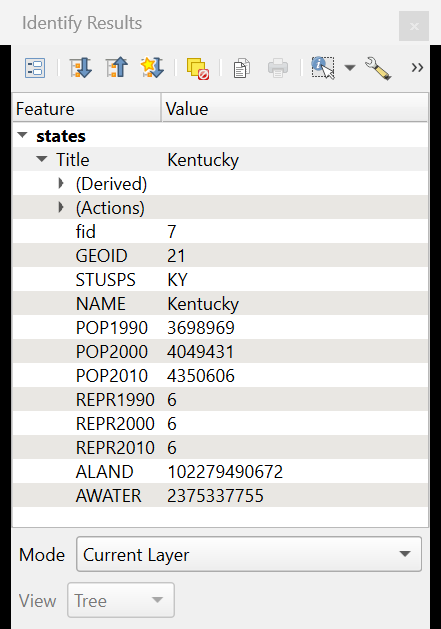
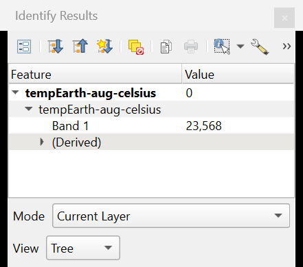

3.3 Navigating the map canvas
This page discusses three frequently used toolbars. We only cover the buttons you will use most often.


B: Selection Toolbar (selecting features)

| B1 | Select Features by Area or Single Click | You can only use this tool in vector layers. With it, you can select one or more vector features. When this tool is active, you can click one vector object in the map canvas or select several objects at once by dragging a selection rectangle. You can tell selected features apart from the others because QGIS gives them a yellow colour by default. If you have made a selection and then click a new feature, the previous selection is cancelled and a new one is made. If you want to add extra features to an existing selection, you can do so by selecting them while you hold down the Shift key. You can only select features in the layer that is selected in your Layers panel. To remove a feature from the selection, click it while you hold down the Ctrl key. Selections in several layers. A selection belongs to one layer. If you select features in one layer and then select another layer in the Layers panel, you can select features there too, while the first selection stays. To clear the selection in one layer, click somewhere in the map canvas where that layer has no features. To clear the selections in all layers at once, click B3. The button also has a small arrow with other selection tools. |
| B2 | Invert Feature Selection | Inverts the selection: everything that was selected is deselected, and the other way round. The small arrow offers other ways to select features. |
| B3 | Deselect Features | With this button you deselect all vector features in all layers. The small arrow offers more ways to deselect. |
| B4 | Select Features by Location | Selects features based on their position relative to other features. We discuss this in Automated selections. |
C: Attributes Toolbar (querying information)

| C1 | Identify Features | Click a raster cell or a vector object in the map canvas to see its attribute values. They appear in the Identify Results panel; click an empty part of the map to clear it.   Left: a vector feature (a state). Right: a raster cell (a temperature value). By default, QGIS only looks in the layer that is selected in the Layers panel. To include other layers, change the Mode at the bottom of the panel, for example to Top Down (all layers). If you see no results, check this setting first. |
| C2 | Open Field Calculator | With the Field Calculator you can calculate attribute values. See Editing attribute data. |
| C3 | Toolbox | This button opens the Processing Toolbox: a panel with hundreds of tools to analyse and edit your data. See Vector processing tools and Raster processing tools. |
| C4 | Show Statistical Summary | Opens a tool to calculate statistics. See Statistical queries. |
| C5 | Open Attribute Table | This opens the attribute table of the layer that is selected in the Layers panel. Selections are linked: features you select in the map canvas are also selected in the table, and the other way round. See The attribute table. |
| C6 | Measure | With this tool you can measure distances, areas… Click a start point, click the next points and right-click to stop. As soon as you use the tool, a window opens in which you see the result of your measurement. Measuring an area. Background map © OpenStreetMap contributors. |

Later we will look more closely at why selections are useful and what you can do with attribute data.
You use your mouse in the map canvas both to navigate, in different ways, and to query and select data. The tool that is active determines what clicking and dragging do. Two shortcuts work whichever tool is active: turn the scroll wheel of your mouse to zoom in or out, and hold down the space bar (or the middle mouse button) while you move the mouse to pan the map.